Product Studio
Product Studio is a separate application, opened from Console’s Studios menu, that takes a raw product idea to a roadmap. The redesign kept the AI doing the drafting and handed the team the pen: every card it writes can be edited, or regenerated on its own, without starting over.

The whole thing, in six lines
Product Studio walks a product team from a raw idea to a plan: understanding, personas, SWOT, features, roadmap, then a summary to export.
An audit against our internal framework scored the old studio 49.9 out of 100, against a benchmark of 80.
Research named four problems: inconsistent UI, hard navigation, flat visualisation and accessibility gaps.
The journey map gave each one a sentence: “I’m not sure where to begin.” “I couldn’t add additional points.”
The redesign is one route from a single prompt to a summary, and every card the AI writes can be edited, or regenerated on its own.
Version 3 is in dev testing. There is no adoption figure yet, and this page does not invent one.
What the studio is for
Console is where agents get built. Product Studio is where a product team thinks.
Enterprise Console is where Ascendion’s agents are built and governed. Its Studios menu links out to separate applications, and Product Studio is one of them. It opens in its own tab, with its own access, and nobody needs Console to use it.
Its job is the part of product work that happens before anything is built. A product manager arrives with an idea, sometimes a sentence and sometimes a document, and needs to leave with something a team can act on: who it is for, what problem it solves, how it stands against the alternatives, which features matter first, and when they ship.
The studio does that in sequence. The AI drafts an understanding of the problem, then personas, a SWOT analysis, a prioritised feature list and a roadmap by quarter, and the team works each one over before moving on.
I worked on it with one other designer from February 2025, from the research through to the interface.
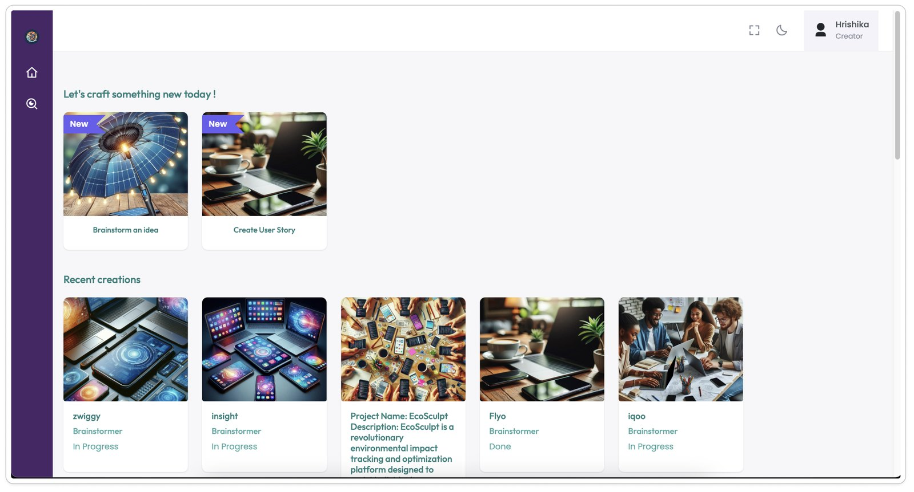
What the audit found
The studio worked. An audit scored it 49.9 out of 100.
We assessed the existing studio with an internal framework that scores an application on five parameters, usability, accessibility, aesthetics, content and performance, each against industry benchmarks. It scored 49.9 out of 100. The benchmark is 80.
A heuristic evaluation marked the problems on the screens themselves. A project’s name and description could not be edited once created. Elements looked interactive and did nothing. Nothing told you where you were when you went back through the steps. The light mode switch did not switch back. Tags were crowded together, and the dark theme did not have the contrast to read comfortably.
Grouped, the findings came to four problems:
- Inconsistent UI. Screens that did not look like one product, and a weak sense of brand.
- Hard navigation. An unclear structure and long flows that made finishing anything slow.
- Flat visualisation. Little feedback, static output, and data that was hard to read.
- Accessibility gaps. Poor contrast, limited adaptability, and behaviour that changed from device to device.
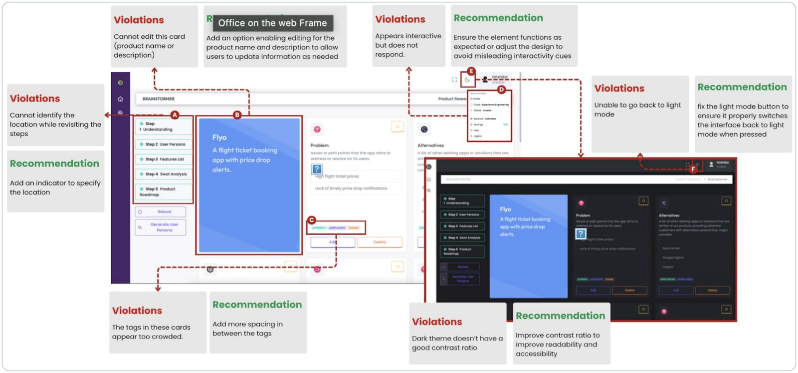
How we found out
Three sources, scored the same way, so the findings could be ranked instead of argued.
Primary research was three interviews with internal users and a survey. Secondary research was a screen-by-screen analysis of the studio against a UI framework, and a close look at two competitors: ProductPlan, a visual roadmapping tool, and Aha!, a full product development suite.
The competitors split neatly. ProductPlan is simple and quick to learn, and it does little beyond roadmaps. Aha! covers strategy through to execution, and takes real time to learn. The most useful column in the comparison was the last one: how each of them beats us.
What users valued was just as clear. The studio supported structured milestone planning and idea validation, and it fitted the way product management and brainstorming already worked. The strengths were in what it did. The problems were in how it felt to do it.
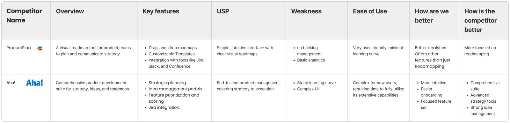
Who had to agree
Three groups, and two of them rated the problem P0.
The product director had the most riding on it: high interest, high influence, and two concerns, a workflow that felt slow and an interface that was inconsistent. Developers had high interest and medium influence, and named a confusing flow, an unintuitive interface and an inconsistent experience. Both came out P0. Product owners sat at medium on both counts and wanted more interactivity and some personalisation: P1.
| Group | Interest | Influence | Key concerns | Priority |
|---|---|---|---|---|
| Product director | High | High | Perceived slow workflow · UI inconsistency | P0 |
| Developers | High | Medium | Confusing user flow · unintuitive UI · inconsistent experience | P0 |
| Product owners | Medium | Medium | Limited interactivity · no personalisation | P1 |
The recommendations were ranked against that map:
- Improve navigation and flowHigh
- Make UI and interaction patterns consistentHigh
- Restructure the information architectureHigh
- Improve onboardingMedium
- Improve accessibility and responsivenessMedium
- Add personalisationLow
Ranked this way, the fixes everything else depended on came first: navigation, consistency and structure. Personalisation, the one thing product owners asked for by name, came last.
Decision: one route, prompt to summary
The old studio was a set of tools. The new one is a route.
Mapped out, the old flow branched in ways that left people unsure where they were: several ways in, branches that doubled back, and no marker for how far a project had got. The journey map had it in a user’s words at the very first step: “I’m not sure where to begin.”
The redesigned flow is a line with one loop in it. A project starts from a single prompt. The studio drafts the understanding, then personas, SWOT, features and the roadmap, one step at a time, and at every step the same question comes back: does this need changes? If it does, you change it there. Then you move on.
The prompt carries more than a sentence. It takes a workspace, a button that improves the prompt before it runs, and attachments, Markdown, PDF or images, so an idea that already lives in a document does not have to be retyped. Suggestions underneath give a first-time user somewhere to begin.
The dashboard changed with it. It used to open on a gallery of generated thumbnails. It now opens on what you came to do: the studios you can start, and your recent projects to pick up where you left them.
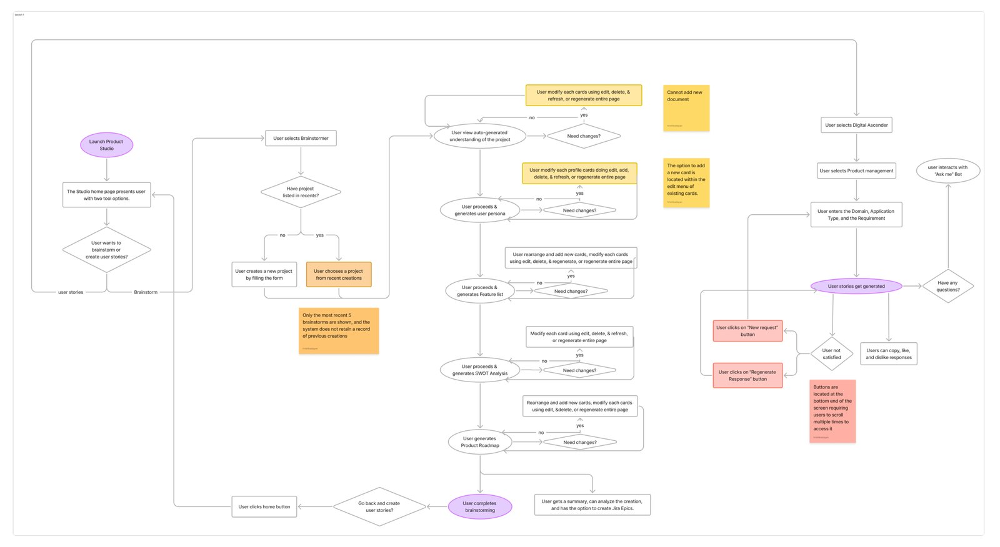
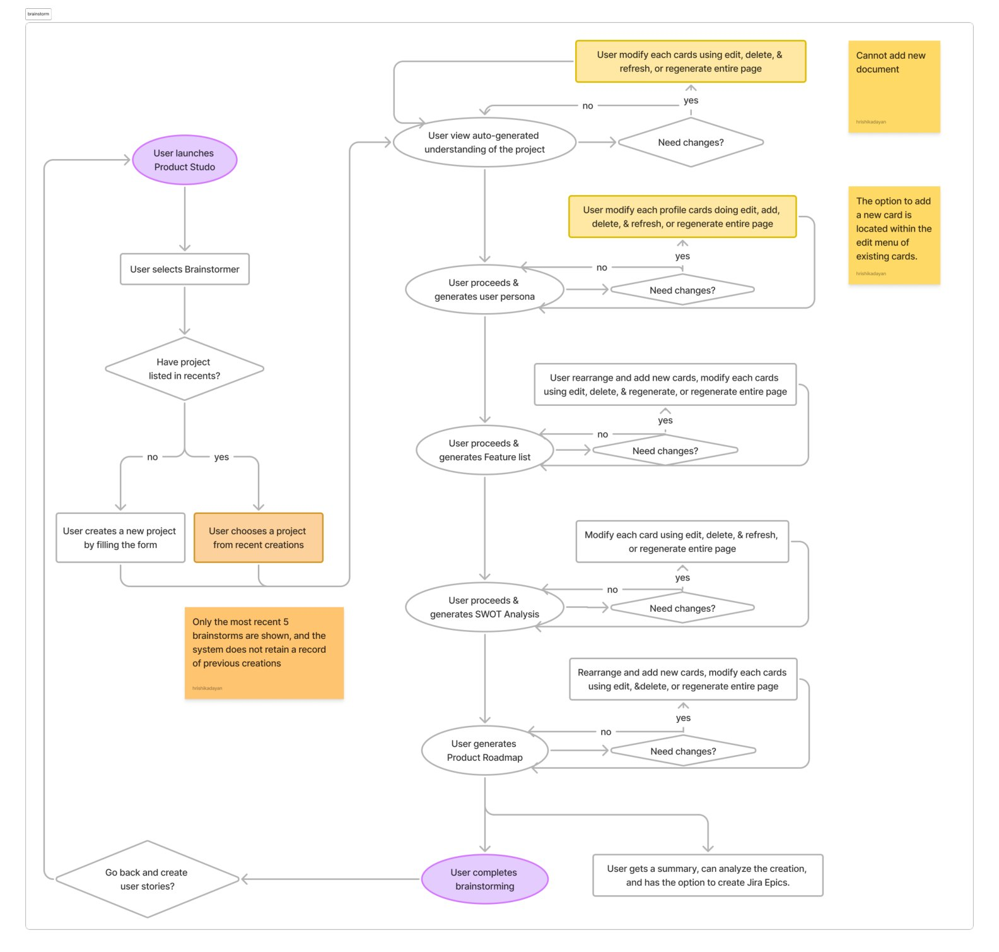
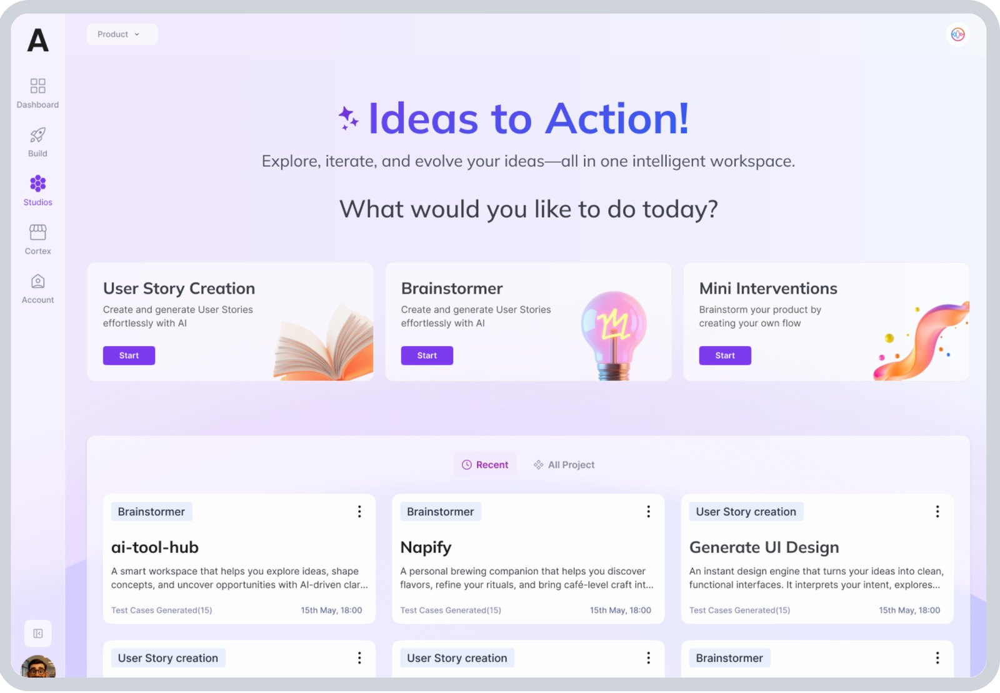
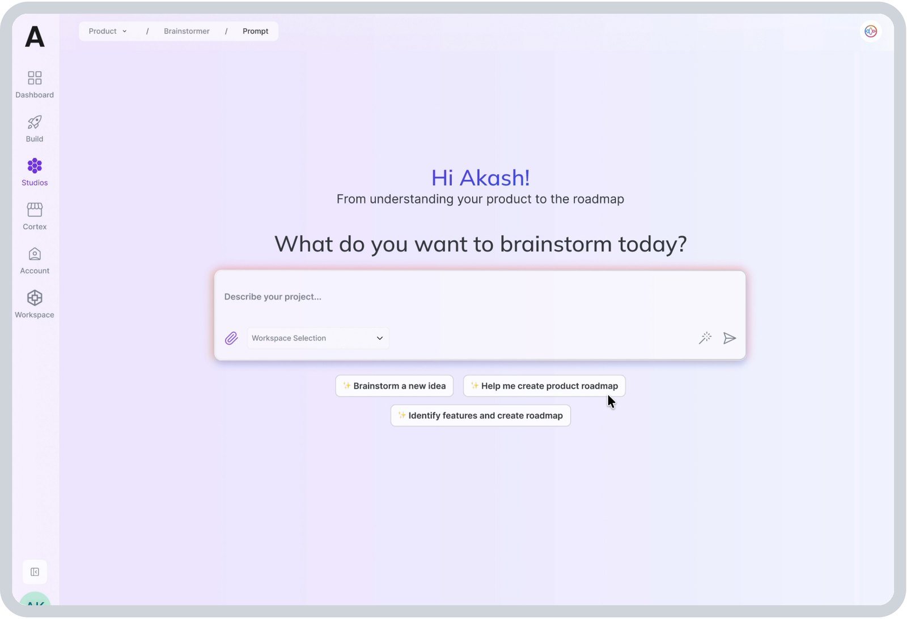
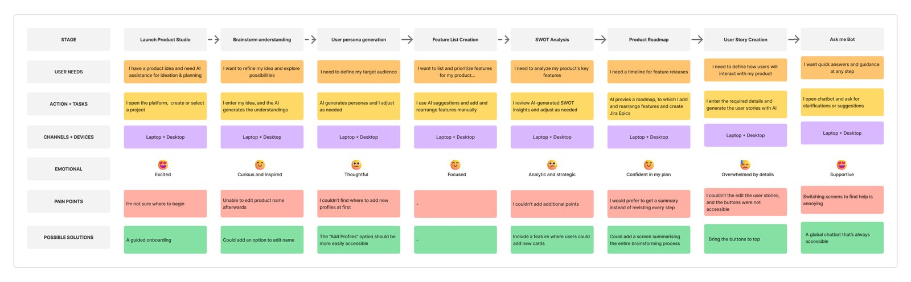
Decision: the AI drafts, the team edits
An answer you can only accept or regenerate from scratch is not a draft. It is a verdict.
The pain points on the journey map were mostly one complaint, found in different places. People could not edit a product name once it was set. They could not find where to add a persona. They could not add a point the SWOT analysis had missed. The AI’s output arrived finished, and the only way to change it was to ask for all of it again.
So in the redesign every step is made of cards, and every card belongs to the team. The understanding step breaks the problem into its parts, problem, solution, value proposition, key metrics, alternatives, customer segments and partners, as separate cards. Personas, SWOT points, features and roadmap items are cards too. Any card can be edited in place, deleted, or regenerated on its own with a note on what to change, and new ones can be added where the AI missed something.
The AI’s judgement stays visible and stays overridable. Features arrive sorted into must have, should have and could have. SWOT points carry an impact and a priority you can move. And when typing into a card is the wrong tool, the Ask me panel takes the request in plain words, such as strengthening a value proposition that reads too thin, and confirms what it updated.
What it cost
A plan the team has rewritten is no longer the AI’s recommendation. It is the team’s decision, which is the point, but it means the studio can never say the roadmap is what the model suggested. The summary at the end has to say who wrote what.
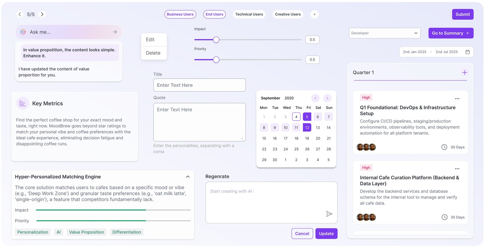
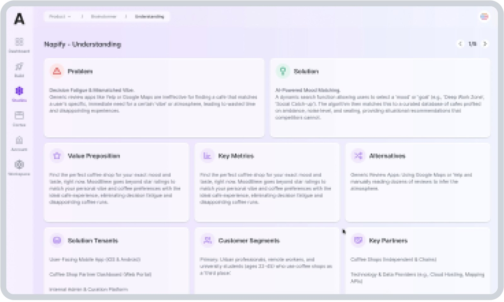
Understanding: the problem broken into cards, each one editable on its own. 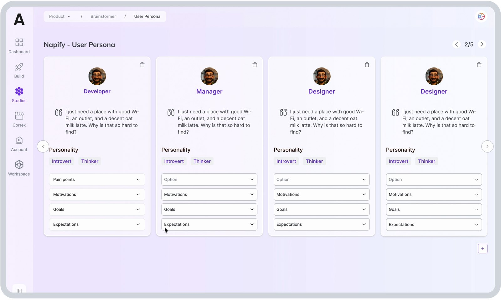
Personas, each an editable card, with room to add the one the AI missed. 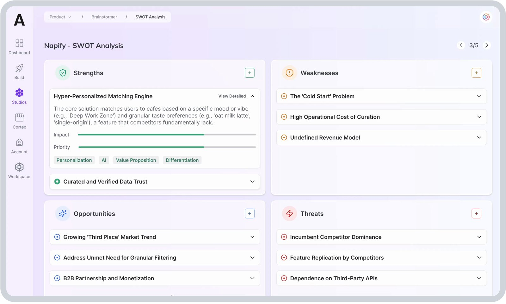
SWOT: every quadrant takes new points, and items carry an impact and a priority. 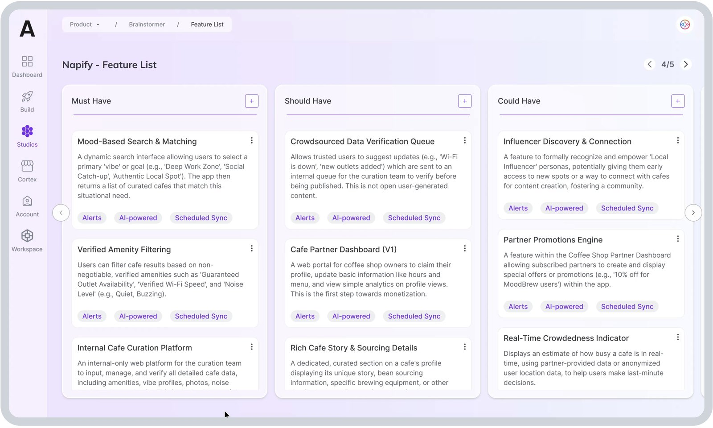
Features, already sorted into must, should and could have. 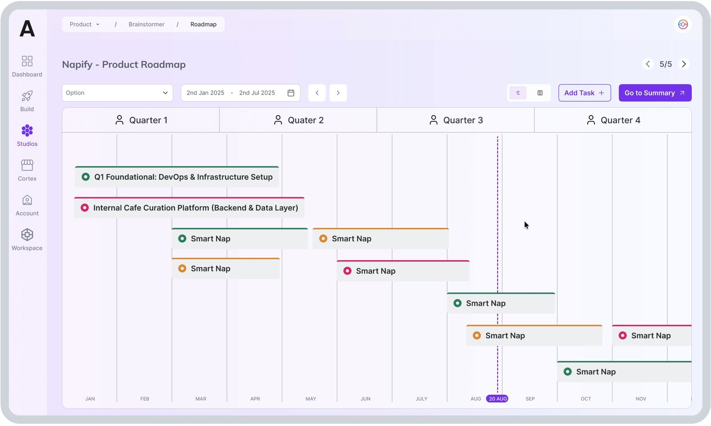
The roadmap, by quarter, rearranged by hand.
Decision: a studio that looks like one product
Inconsistency was first on the list, and the cheapest problem to leave unsolved.
The first goal we set was a visual language specific to the studio: one set of components, one type scale and one colour, used the same way on every screen. The old studio had drifted screen by screen. The new one has a component board behind it, and every screen is assembled from it.
The colour is the violet the Play+ design system assigns to Product Studio. The studio is recognisably itself, and it still shares its buttons, fields and cards with Console and the other studios, because the system maps one set of components to a different colour for each product.
Several heuristic findings were fixed once, in the components, rather than screen by screen. Tags got room between them. Every step shows where you are in the sequence, two of five, three of five. Cards that looked editable now are.
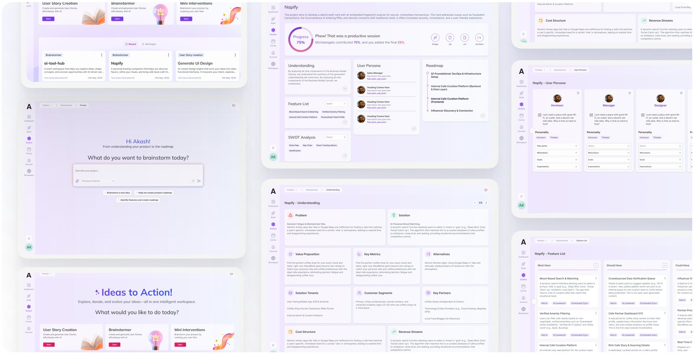
What leaves the studio
The flow ends in a summary, because people asked for one.
“I would prefer to get a summary instead of revisiting every step” was on the journey map, beside the roadmap stage. The summary screen is the answer: the understanding, the personas, the feature list and the roadmap on one page, with exports to Jira, CSV or a zip file, so the plan can leave the studio and go where the team already works.
It also says who did the work. The session summary gives the AI its share of the result and the team theirs. It is a small line, and it is the honest version of what the studio does: the AI drafts, people decide, and the output should say which is which.
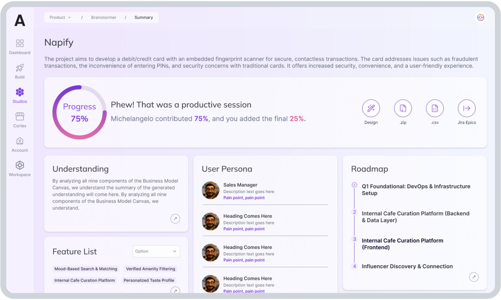
What happened
Version 3 is in dev testing. I have no adoption figure to give you.
Version 2 of the redesign is done, and version 3 is being tested by the development team now. It has not been in front of the product teams it was designed for at any scale, so there is no before-and-after figure to report, and I would rather say that than estimate one.
Two measures will say whether the redesign worked, once people are using it. How often a card is edited, against how often it is regenerated: that shows whether people trust a draft enough to fix it rather than reroll it. And how many projects reach the summary. Those two will say more than any satisfaction score.
Questions about any of these decisions?
The part I’d most like to be pushed on is the editable output: where editing should stop, and whether a team that can change every card still trusts any of them.